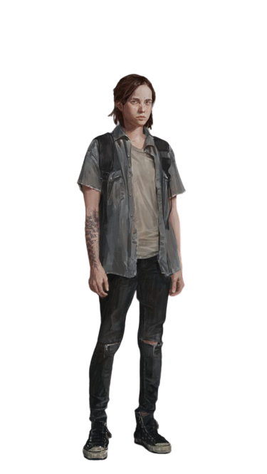

Cincos anos depois após uma jornada perigosa em um mundo pós-pandêmico, Joel e Ellie se estabiliza em Jackson, uma comunidade liderada pelo irmão de Joel, Tommy. A paz proporcionada a eles acaba por causa de um evento violento, então Ellie parte em uma nova jornada em busca de justiça. Enquanto vai atrás dos responsáveis, ela se depara e confronta o caminho violento e devastador das suas atitudes e ações.
X